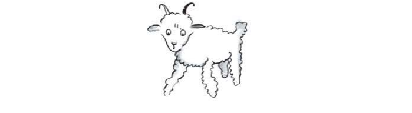

Le Petit Prince
Antoine de Saint-Exupéry
À Léon Werth
Je demande pardon aux enfants d’avoir dédié ce livre à une grande personne. J’ai une excuse sérieuse : cette grande personne est le meilleur ami que j’ai au monde. J’ai une autre excuse : cette grande personne peut tout comprendre, même les livres pour enfants. J’ai une troisième excuse : cette grande personne habite la France où elle a faim et froid. Elle a bien besoin d’être consolée. Si toutes ces excuses ne suffisent pas, je veux bien dédier ce livre à l’enfant qu’a été autrefois cette grande personne. Toutes les grandes personnes ont d’abord été des enfants. (Mais peu d’entre elles s’en souviennent.) Je corrige donc ma dédicace :
À Léon Werth
quand il était petit garçon
PREMIER CHAPITRE
LORSQUECuando j’avaistenía sixseis ansaños j’ai vu,vi uneuna fois,vez uneuna magnifiquemagnífica image,imagen dansen unun livrelibro sursobre lala ForêtBosque ViergeVirgen quique s’appelaitse llamaba « HistoiresHistorias VécuesVividas ». Ça représentaitQue representaba unun serpentserpiente boaboa quique avalaittragaba unun fauve.gran felino VoilàAquí lala copiecopia dudel dessin.dibujo
.....On disaitSe decía dansen leel livrelibro : « LesLos serpentsserpientes boasboas avalenttragan leursu proiepresa tout entière,entera sanssin la mâcher.masticarla EnsuiteLuego ilsellos ne peuventpueden plus bougerya no pueden moverse más ety ilsellos dormentduermen pendantdurante leslos sixseis moismeses dede leursu digestion.digestión »
.....J’ai alors beaucoup réfléchiEntonces reflexioné mucho sursobre leslas aventuresaventuras dede lala junglejungla et,y à mon tour,por mi parte j’ai réussi,logré aveccon unun crayonlápiz dede couleur,color à tracerdibujar monmi premierprimer dessin.dibujo MonMi dessindibujo numéronúmero 1. IlEl étaitera comme çaasí :
.....J’ai montréEnseñé monmi chef-d’œuvreobra maestra auxa las grandes personnespersonas mayores ety je leur ai demandéles pregunté sisi monmi dessindibujo leur faisait peur.los asustó
.....EllesEllas m’ont répondume respondieron : « PourquoiPor qué unun chapeausombrero ferait-il peurdaría miedo ? »
.....MonMi dessindibujo ne représentait pasno representaba unun chapeau.sombrero IlEl représentaitrepresentaba unun serpentserpiente boaboa quique digéraitdigería unun éléphant.elefante J’aiYo alorsentonces dessinédibujé l’intérieurel interior dudel serpentserpiente boa,boa afinpara queque leslas grandes personnespersonas mayores puissentpudieran comprendre.comprender EllesEllas ont toujours besoinsiempre necesitan d’explications.de explicaciones MonMi dessindibujo numéronúmero 2 étaitera comme çaasí :
.....LesLas grandes personnespersonas mayores m’ontme conseilléaconsejaron de laisser de côtéde dejar de lado leslos dessinsdibujos dede serpentsserpientes boasboas ouvertsabiertos ouo fermés,cerrados ety dede m’intéresserinteresarme plutôten vez àen lala géographie,geografía àen l’histoire,la historia auen calculcálculo ety àen lala grammaire.gramática C’est ainsi queAsí es como j’aiyo abandonné,abandoné àa l’âgela edad dede sixseis ans,años uneuna magnifiquemagnífica carrièrecarrera dede peintre.pintor J’avais étéMe había découragédesanimado parpor l’insuccèsel fracaso dede monmi dessindibujo numéronúmero 1 ety dede monmi dessindibujo numéronúmero 2. LesLas grandes personnespersonas mayores ne comprennent jamaisnunca comprenden riennada toutes seules,por sí mismos ety c’estes fatigant,cansado pourpara leslos enfants,niños dede toujourssiempre ety toujourssiempre leur donner des explications.darles explicaciones
.....J’ai donc dû choisirAsí que tuve que elegir unun autreotro métiertrabajo ety j’aiyo apprisaprendí àa piloterpilotar des avions.aviones J’ai voléHe volado unun peupoco partoutpor todo dansen leel monde.mundo EtY lala géographie,geografía c’estes exact,exacto m’a beaucoup servi.me ha servido mucho JeYo savaissabía reconnaître,reconocer dude premierprimer coup d’œil,vistazo lala ChineChina dede l’Arizona.la Arizona C’estEs trèsmuy utile,útil sisi l’onuno estse égarépierde pendantdurante lala nuit.noche
.....J’ai ainsi eu,Así que tuve auen courscurso dede mami vie,vida des tasmuchos de contactscontactos aveccon des tasmuchas de gensgente
sérieux.seria J’ai beaucoup vécu chez les grandes personnes.He vivido mucho con las personas mayores JeYo leslos aihe vuesvisto dede trèsmuy près.cerca Ça n’a pasEso no trop améliorémejoró demasiado monmi opinion.opinión
.....QuandCuando j’en rencontraisconocí uneuna quique meme paraissaitparecía unun peupoco lucide,lúcida jeyo faisaishacía l’expériencela experencia surcon elleella dede monmi dessindibujo numéronúmero 1 queque j’aiyo toujourssiempre conservé.conserve JeYo voulaisquería savoirsaber sisi elleella étaitera vraimentverdaderamente compréhensive.comprensiva MaisPero toujourssiempre elleella meme répondaitrespondía : « C’estEs unun chapeau.sombrero » AlorsEntonces jeyo neno luile parlaishablaba nini dede serpentsserpientes boas,boas nini dede forêtsbosques vierges,vírgenes nini d’étoiles.de estrellas JeYo meme mettaisponía àa sasu portée.nivel JeYo luile parlaishablaba dede bridge,bridge dede golf,golf dede politiquepolítica ety dede cravates.corbatas EtY lala grande personnepersona mayor étaitestaba bienmuy contentecontenta dede connaîtreconocer unun hommehombre aussitan raisonnable.razonable
II
J’AIYo ainsientonces vécuviví seul,solo sanssin personnenadie aveccon quiquien parlerhablar véritablement,realmente jusqu’àhasta uneuna panneavería dansen leel désertdesierto dudel Sahara,Sahara il y ahace sixseis ans.años Quelque choseAlgo s’étaitse cassérompió dansen monmi moteur.motor EtY commecomo jeyo n’avaisno tenía avec moiconmigo nini mécanicien,mecánico nini passagers,pasajeros jeyo meme préparaipreparé àpara essayertratar dede réussir,lograr tout seul,solo uneuna réparationreparación difficile.difícil C’étaitEra pourpara moimi uneuna questioncuestión dede vievida ouo dede mort.muerte J’avaisTenía àa peinepenas dede l’eauel agua àpara boirebeber pourpara huitocho jours.días
.....LeEl premierprimer soirnoche je me suis donc endormientonces me quedé dormido sursobre leel sablearena àa millemil millesmillas dede toutetoda terretierra habitée.habitada J’étaisEstaba bien plusmucho más isoléaislado qu’unque un naufragénaufrago suren unun radeaubalsa auen milieumedio dede l’Océan.el oceano AlorsEntonces voususted imaginezimagina mami surprise,sorpresa aual lever du jour,amanecer quandcuando uneuna drôle deextraña petitepequeña voixvoz m’ame réveillé.despertó ElleElla disaitdijo :
.....—S’il vous plaît…Por favor dessine-moidibujame unun moutonoveja !
.....—HeinEh !
.....—Dessine-moiDibujame unun mouton…oveja
.....J’ai sautéSalté sursobre mesmis piedspies commecomo sisi j’avais étéme hubiera frappégolpeado parpor lala foudre.rayo J’ai bien frottéMe frote bien mesmis yeux.ojos J’ai bien regardé.Tomé un buen vistazo EtY j’ai vuyo vi unun petit bonhommehombrecito tout à fait extraordinairebastante extraordinario quique meme considéraitmiraba gravement.seriamente
VoilàAquí esta leel meilleurmejor portraitretrato que,que plusmas tard,tarde j’ai réussilogré à
fairehacer dede lui.el
.....MaisPero monmi dessin,dibujo bien sûr,claro estes beaucoupmucho moinsmenos ravissantencantador queque leel modèle.modelo Ce n’est pasNo es mami faute.culpa J’avais étéMe había découragédesanimado dansen mami carrièrecarrera dede peintrepintor parpor leslas grandes personnes,personas mayores àa l’âgela edad dede sixseis ans,años ety jeyo n’avaisno había riennada apprisaprendido àpara dessiner,dibujar saufsalvo leslos boasboas ferméscerrados ety leslos boasboas ouverts.abiertos
.....JeYo regardaimiré doncentonces cetteesta apparitionaparición aveccon desunos yeuxojos touttodo rondsredondo d’étonnement.de asombro N’oubliez pasNo olvides queque je me trouvais àyo me encontraba a millemil millesmillas dede toutetoda régionregión habitée.habitada OrPero monmi petit bonhommehombrecito neno meme semblaitparecía nini égaré,perdido nini mortmuerto dede fatigue,fatiga nini mortmuerto dede faim,hambre nini mortmuerto dede soif,sed nini mortmuerto dede peur.miedo IlEl n’avaitno tenía enen riennada l’apparencela apariencia d’unde un enfantniño perduperdido auen milieumedio dudel désert,desierto àa millemil millesmillas dede toutetoda régionregión habitée.habitada QuandCuando jeyo réussislogré enfinfinalmente àa parler,hablar jeyo luile disdije :
.....—Mais…Pero qu’est-ce queque tutu faishaces làaquí ?
.....EtY ilel meme répétarepitió alors,entonces tout doucement,muy suavemente commecomo uneuna chosecosa trèsmuy sérieuseseria :
.....—S’il vous plaît…Por favor dessine-moidibujame unun mouton…oveja
.....QuandCuando leel mystèremisterio estes tropdemasiado impressionnant,impresionante on n’ose pas désobéir.no nos atrevemos a desobedecer AussiTan absurdeabsurdo que cela me semblâtcomo me pareció àa millemil millesmillas dede toustodos leslos endroitslugares habitéshabitados ety enen dangerpeligro dede mort,muerte jeyo sortissaqué dede mami pochebolsillo uneuna feuillehoja dede papierpapel ety unun stylographe.estilógrafo MaisPero jeyo meme rappelaiacordé alorsentonces queque j’avaisyo había surtoutsobre todo étudiéestudiado lala géographie,la geografía l’histoire,la historia leel calculcalculo ety lala grammairegramática ety je disle dije aual petit bonhommehombrecito (aveccon unun peupoco dede mauvaisemal humeur)humor queque jeyo ne savais pasno sabía dessiner.dibujar IlEl meme réponditrespondió :
.....—Ça ne fait rien.Eso no importa Dessine-moiDibujame unun mouton.oveja
.....CommeComo jeyo n’avais jamaisjamas había dessinédibujado unun moutonoveja jeyo refis,rehice pourpara lui,el l’ununo desde los deuxdos seulsúnicos dessinsdibujos dontde los cuales j’étaisyo era capable.capaz CeluiEl dude boaboa fermé.cerrado EtY
je fus stupéfaityo estaba impresionado d’entendrede escuchar leel petit bonhommehombrecito me répondreresponderme :
.....—NonNo ! NonNo ! JeYo ne veux pasyo no quiero d’unde un éléphantelefante dansen unun boa.boa UnUn boaboa c’estes trèsmuy dangereux,peligroso ety unun éléphantelefante c’estes trèsmuy encombrant.voluminoso Chez moiEn mi casa c’estes tout petit.muy pequeño J’ai besoinYo necesito d’unde un mouton.oveja Dessine-moiDibujame unun mouton.oveja
.....AlorsEntonces j’ai dessiné.dibujé
.....IlEl regardamiró attentivement,atentamente puisdespués :
.....—NonNo ! Celui-làEse est déjàya está trèsmuy malade.enfermo Fais-en un autre.Haz otro
.....Je dessinaiYo dibujé :
.....MonMi amiamigo souritsonrió gentiment,amablemente aveccon indulgenceindulgencia :
.....—Tu voisMira bien…bien ceeste n’est pasno es unun mouton,oveja c’estes unun bélier.carnero IlEl a destiene cornes…cuernos
.....JeYo refisrehice doncentonces encorenuevamente monmi dessindibujo :
.....MaisPero ilel futfue refusé,rechazado commecomo leslos précédentsanteriores :
.....—Celui-làEse estes tropdemasiado vieux.viejo JeYo veuxquiero unun moutonoveja quique viveviva longtemps.mucho tiempo
.....Alors,Entonces fautefalta dede patience,paciencia commecomo j’avaistenía hâteprisa dede commencercomenzar leel démontagedesmontaje dede monmi moteur,motor jeyo griffonnaigarabateé ceeste dessin-ci.dibujo

.....EtY jeyo lançailancé :
.....—ÇaEsta c’estes lala caisse.caja LeEl moutonoveja queque tutu veuxquieres estesta dedans.adentro
.....MaisPero je fus bien surprisme sorprendió dede voirver s’illumineriluminarse leel visagecara dede monmi jeunejoven jugejuez :
.....—C’estEs tout à faittotalmente commecomo ça que je le voulaislo que yo quería ! Crois-tuTu crees qu’il faille beaucoupque se necesita mucho d’herbede hierba àpara ceeste moutonoveja ?
.....—PourquoiPor qué ?
.....—Parce quePorque chez moimi casa c’estes tout petit…muy pequeño
.....—ÇaEso suffiraserá suficiente sûrement.seguramente JeYo t’ai donnéte di unun tout petitmuy pequeño mouton.oveja
.....IlEl penchainclinó lala têtecabeza vershacia leel dessindibujo :
.....—Pas si petit que ça…No tan pequeño TiensAquí ! IlEl s’estse ha endormi…dormido
.....EtY c’estes ainsiasi queque jeyo fis la connaissancellegué a conocer dual petit prince. principito